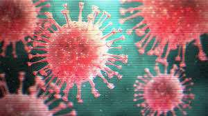
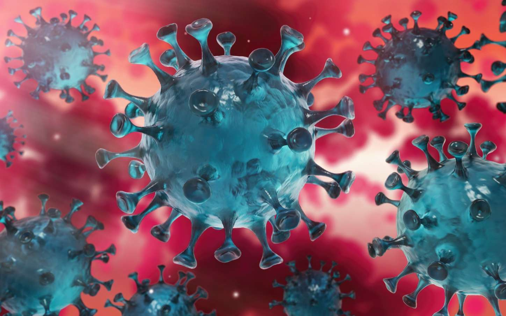

corona virus !

when and where did she happen!
Sur ce site Web, vous trouverez des informations et des conseils de l'OMS
concernant la flambée actuelle de maladie à coronavirus 2019 (COVID-19)
qui a été signalée pour la première fois à Wuhan, en Chine, le 31 décembre
2019. Nous vous invitons à visiter cette page pour consulter les mises à
jour quotidiennes. L'OMS travaille en étroite collaboration avec les
experts mondiaux, les gouvernements et les partenaires pour élargir
rapidement les connaissances scientifiques sur ce nouveau virus, suivre la
propagation et la virulence du virus, et donner des conseils aux pays et
aux individus sur les mesures à prendre pour protéger la santé et empêcher
la propagation de cette flambé

what is the symptom of corona virus
-
If you have a fever, cough and difficulty breathing, seek medical
attention, but call by telephone in advance if possible and follow
the directions of your local health authority. Why? National and
local authorities will have the most up to date information on the
situation in your area. Calling in advance will allow your health
care provider to quickly direct you to the right health facility.
This will also protect you and help prevent spread of viruses and
other infections.
-
Keep up to date on the latest information from trusted sources, such
as WHO or your local and national health authorities. Why? Local and
national authorities are best placed to advise on what people in
your area should be doing to protect themselves.
-
The most common symptoms of COVID-19 are fever, dry cough, and
tiredness. Other symptoms that are less common and may affect some
patients include aches and pains, nasal congestion, headache,
conjunctivitis, sore throat, diarrhea, loss of taste or smell or a
rash on skin or discoloration of fingers or toes. These symptoms are
usually mild and begin gradually. Some people become infected but
only have very mild symptoms.
haw can we protect ourself from coronavirus
- home as miuch as possible.
- KEEP a safe distance.
- WASH your hands often.
- COVER your mouth when you cough.
- ARE YOU SICK? Call your doctor.